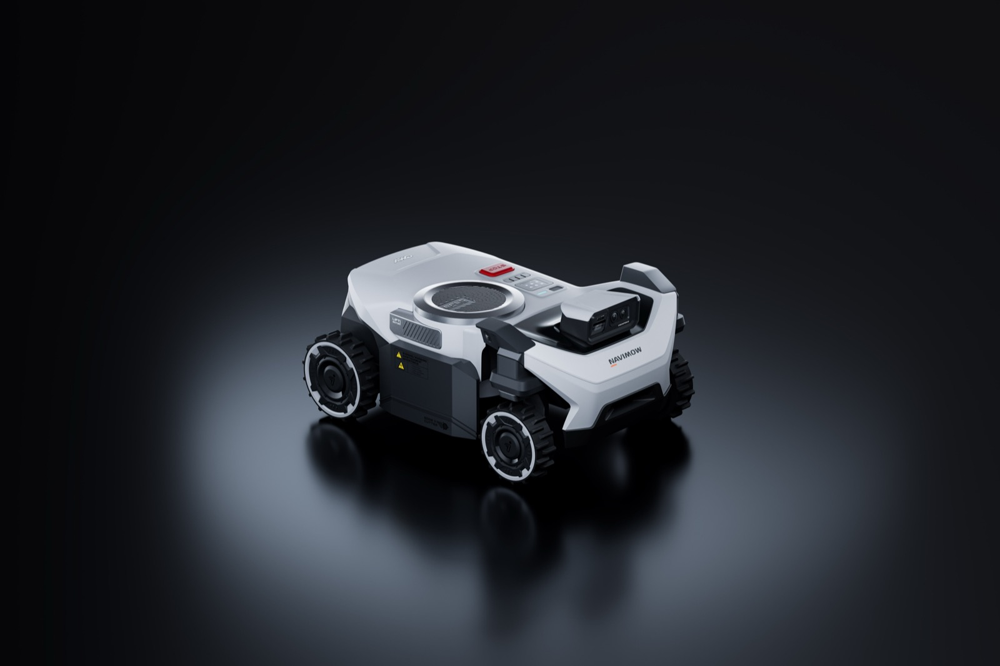
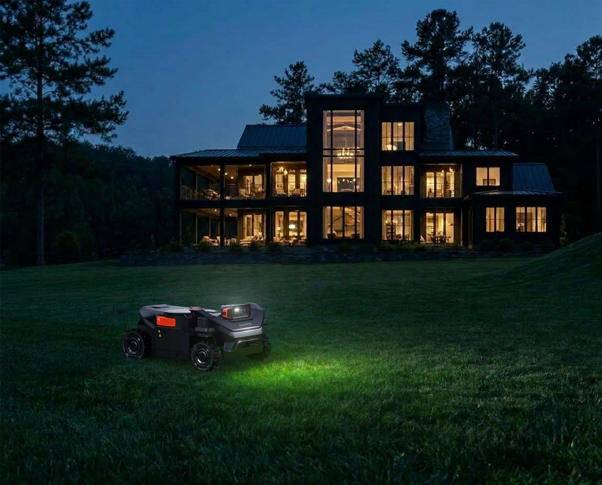

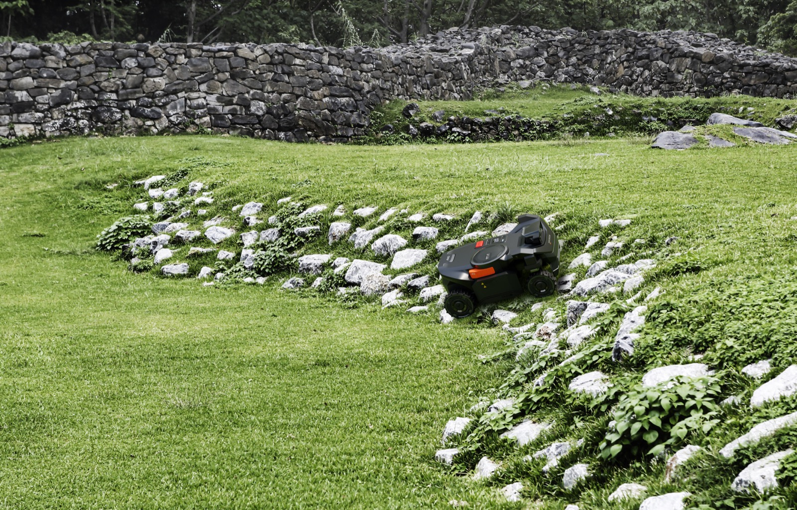
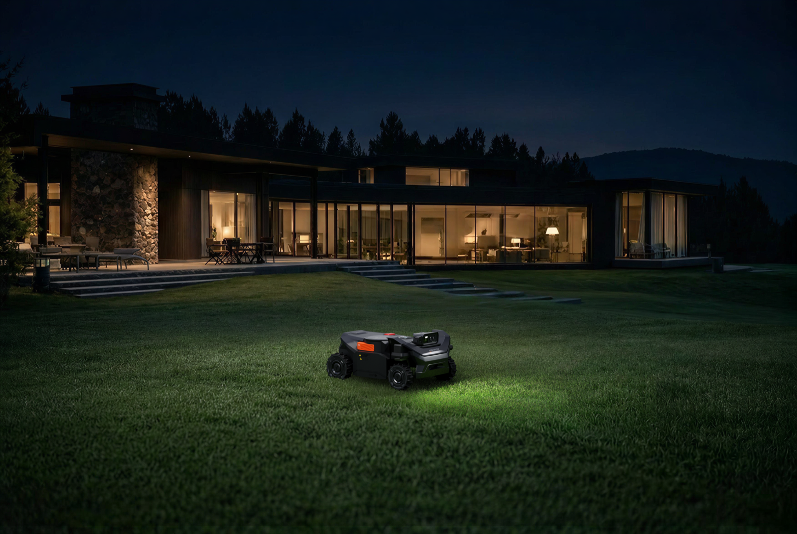

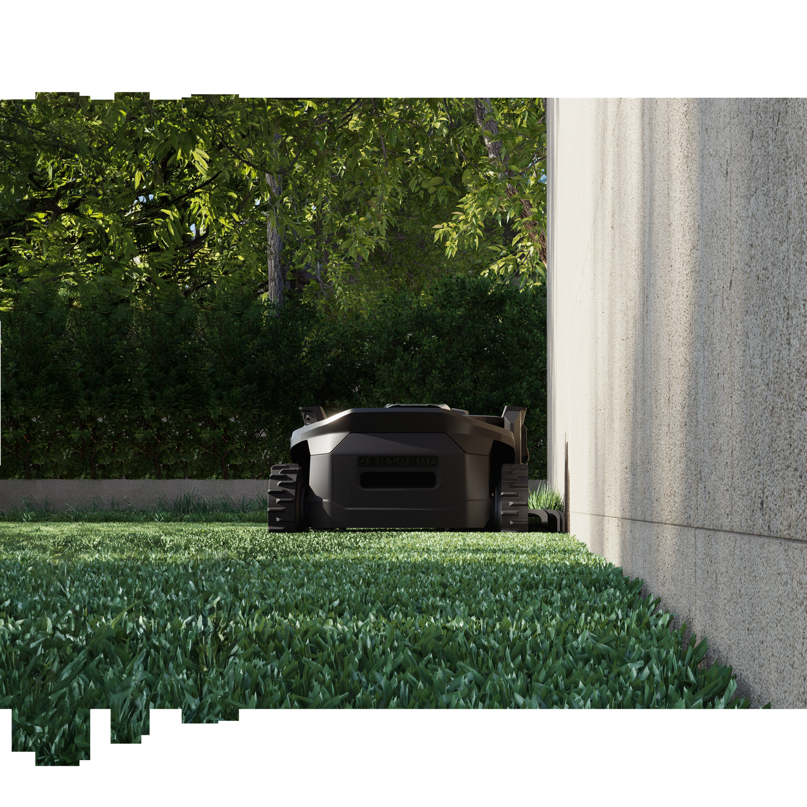
新一代 1/1.3 英寸传感器
360° 地平线增稳
人物居中和跟随
4 小时超长续航
双 OLED 高亮触摸屏
双 DJI 麦克风直连
新一代 1/1.3 英寸传感器
有了这块新的底，拍起来更有底。等效像素尺寸达 2.4 μm，13.5 挡高动态范围堪比专业相机，配合 4 纳米高性能芯片，即使在城市夜晚或日落日出大光比时刻，也能让你拍出清晰锐利、明暗层次丰富的画面。
最高支持拍摄 4K/60fps 高动态低光影像，能细腻呈现暗部细节，让亮部不过曝，并整体提高画面亮度。
在极低照度环境下，超级夜景模式可运用降噪算法应对暗光挑战，画面更纯净。
双 OLED 高亮触摸屏
前后屏均升级为 OLED 高亮触摸屏，画面对比度高、色彩生动，其中主屏峰值亮度提高至 1000 cd/㎡，更利于日间拍摄。不仅如此，前后屏幕加大，且边框变窄，机身体积却依旧不变，屏占比提高16%。
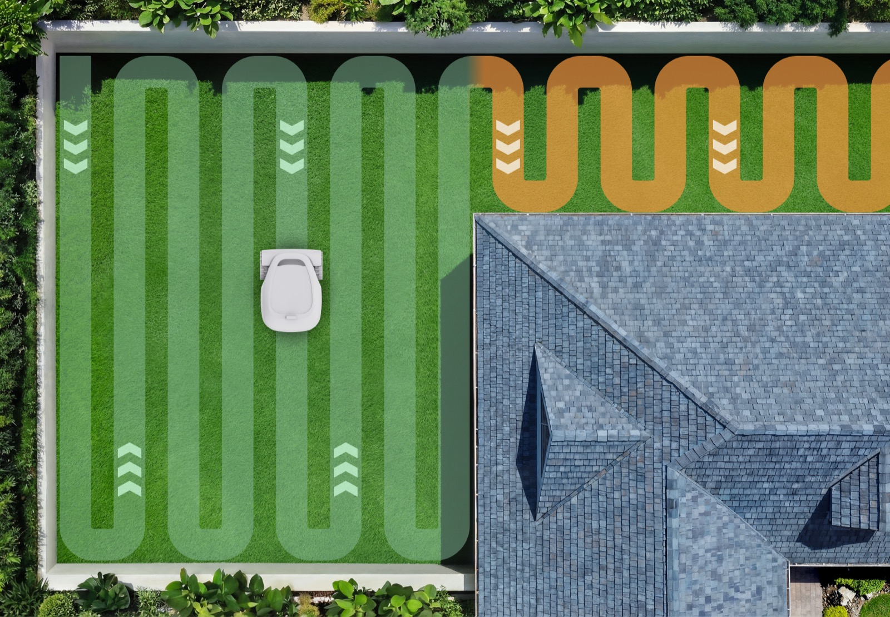
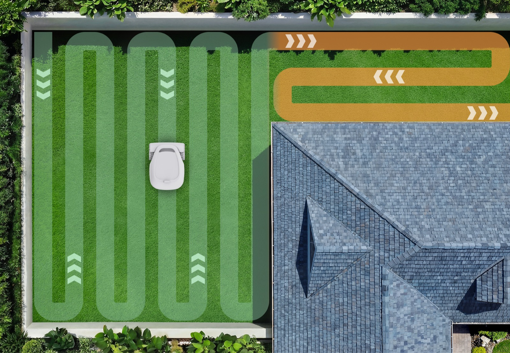
双屏采用钢化玻璃，防摔防刮，且贴有 AF 防护镀膜，湿手触控也依然灵敏。
进行熄屏显示时，双屏以低功耗显示录制规格和时长，你不仅能一眼获取关键信息，且夜间不受亮光干扰。

10-bit D-Log M 色彩还原预览
10-bit D-Log M 和 10-bit HLG 模式均能更充分地记录高光和低光细节，且捕捉的色彩超 10 亿种，成片更经得起后期打磨。与此同时，Action 5 Pro 前后触摸屏可还原 D-Log M 灰片色彩，你能精准把控色彩和亮度，保障原片质量。
▶
近 4000 万像素连拍
按一次快门，可连续捕捉多个惊艳瞬间。单张照片最高具备约 4000 万像素（7296×5472）或 8K（16:9）分辨率，清晰度约为前代的 4 倍，裁切后还有饱满细节。
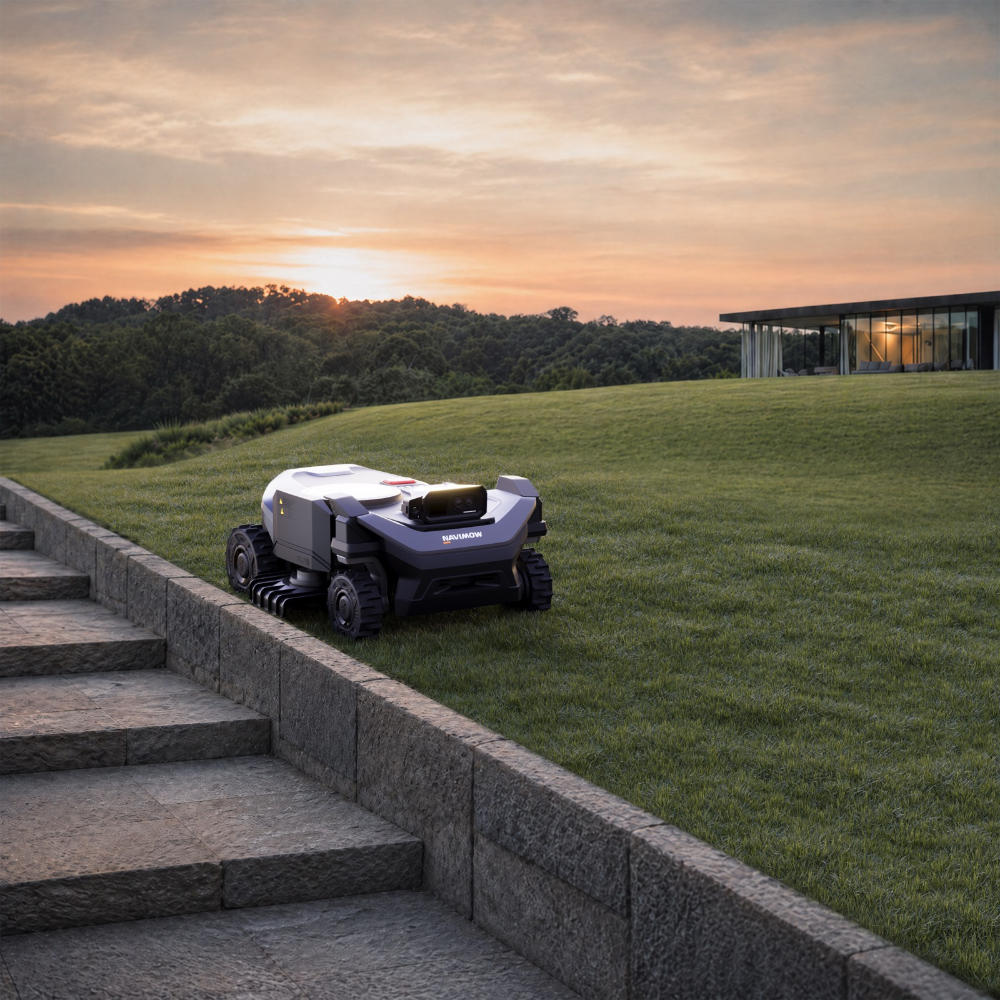
色温传感器
实时感知环境色温，成片色彩更真实。
47GB 内置存储
码率进一步优化，文件体积变小。
4 纳米高性能芯片
算力升级，画质算法全面进化。
Wi-Fi 6.0 & USB 3.0
无线传输最高 80MB/s。
人物跟随，主角居中
DJI 首次实现运动相机的人物跟随。即使没有云台，Action 5 Pro 也能智能判断人物位置，并动态调整画面构图，始终让人物处于视觉中心，拍摄横屏或竖屏主角大片。
 跟踪框
跟踪框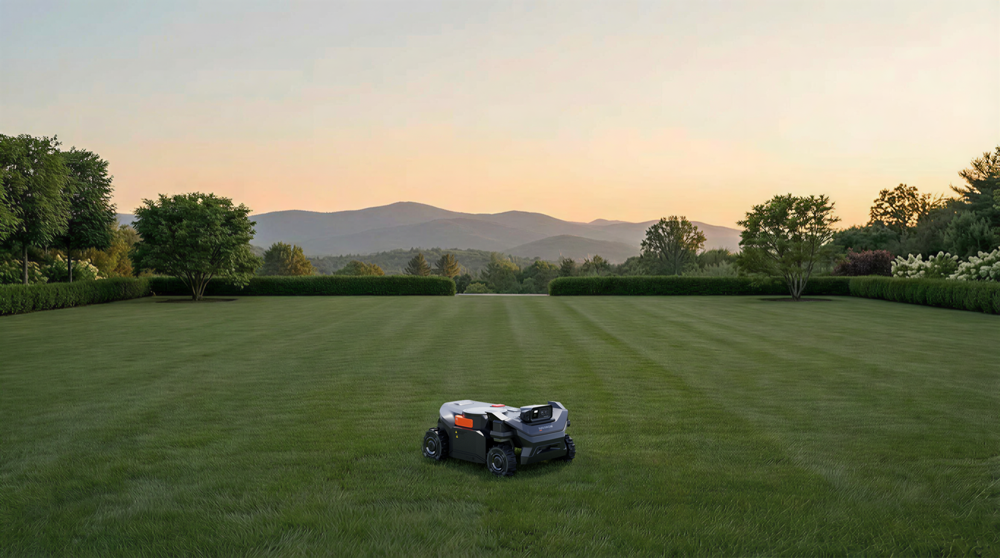
成片开启 4 小时续航时代
相较 Action 4，续航飙升 50%，刷新运动相机续航表现。一块电池最长能用 4 小时，超强耐力跟得上你的高能节奏。遇到低温考验，依旧不掉队，在零下 20℃ 也能持续录制 3.6 小时。
360° 地平线增稳
地平线增稳 HorizonSteady
不仅有效抵消抖动，还能水平校正 360° 内的地平线倾斜，不惧剧烈颠簸和旋转，适用于大部分拍摄场景。
地平校正 HorizonBalancing
模式仅对 ±45° 内的地平线倾斜进行水平校正，最高支持录制 4K/60fps 视频。
超强增稳 3.0
 ▶
▶在有效抑制抖动的基础上，保留更多运动冲击感，画面更具第一人称视角的沉浸观感，最高支持录制 4K/120fps 视频。
内置专业水压计，智能拍摄
潜水或游泳时，可实时查看当前水深，下水自动开机并开启水下增稳，出水自动提示排水。
水下色彩还原
underwater 专用色彩算法，还原海洋本来的蓝。
OsmoAudio™ 连接生态，专业收音
双 DJI 麦克风直连，立体声收音、降风噪。
多模式增稳
颠簸路段画面依旧稳定顺滑。
32 倍超级慢动作
相较常规 8 倍慢动作，32 倍慢动作捕捉更多瞬间细节。
耐低温电池
零下 20℃ 持续录制 3.6 小时。
▶多功能充电手柄
可为 Action 5 Pro 充电，续航更持久。
内置专业气压计
实时感知海拔变化，智能拍摄。
码率进一步优化，文件体积变小。
Wi-Fi 6.0 & USB 3.0，无线传输最高 80MB/s。
充电 15 分钟，畅拍 2 小时。
DP 传输*能协助团队进行多机位直播推流或监看，4K 推流模式下可同时开启 1080p 内录。
多种画面规格，支持直播录像。
多机位素材快速对齐。
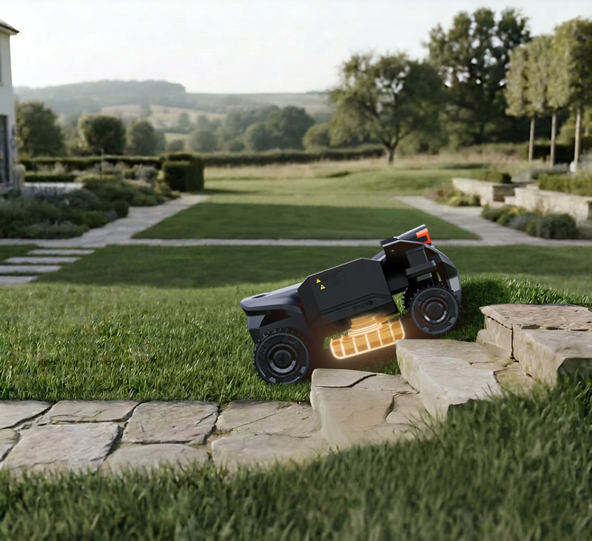
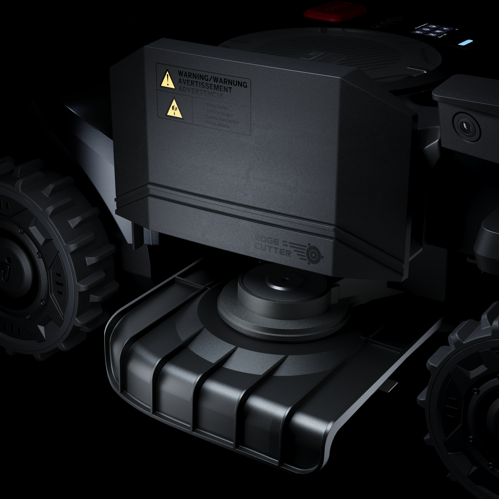
佩戴增广镜后，Action 5 Pro 的视角可扩展至 182°，超宽广角下的画面极具张力和临场感。
设定一个拍摄时间后，Action 5 Pro 将准时唤醒并按预设模式开拍，不怕错过关键时刻。
将 3 秒视频变为动态照片。
保留正式录制前的精彩片段。
关键画面一键标定，剪辑加速。
Mimo App，智能拍剪
无线连接 Action 5 Pro 后，可预览拍摄画面、调整参数，且内置丰富的剪辑模板和一键成片功能。此外，Mimo app 具备运动仪表盘、水下色彩还原、消除自拍杆等丰富的运动相机素材编辑功能。
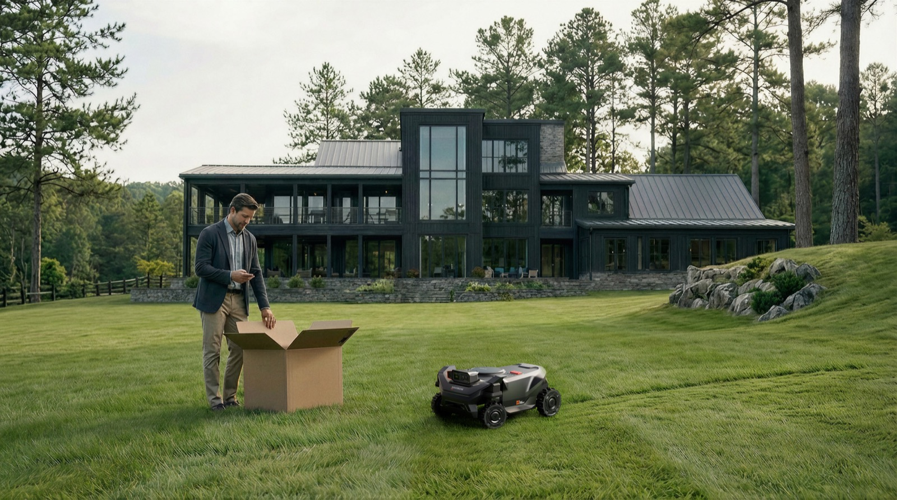
后台下载：下载素材时，即使手机切换至其他应用，Mimo app 也可在后台持续下载素材。
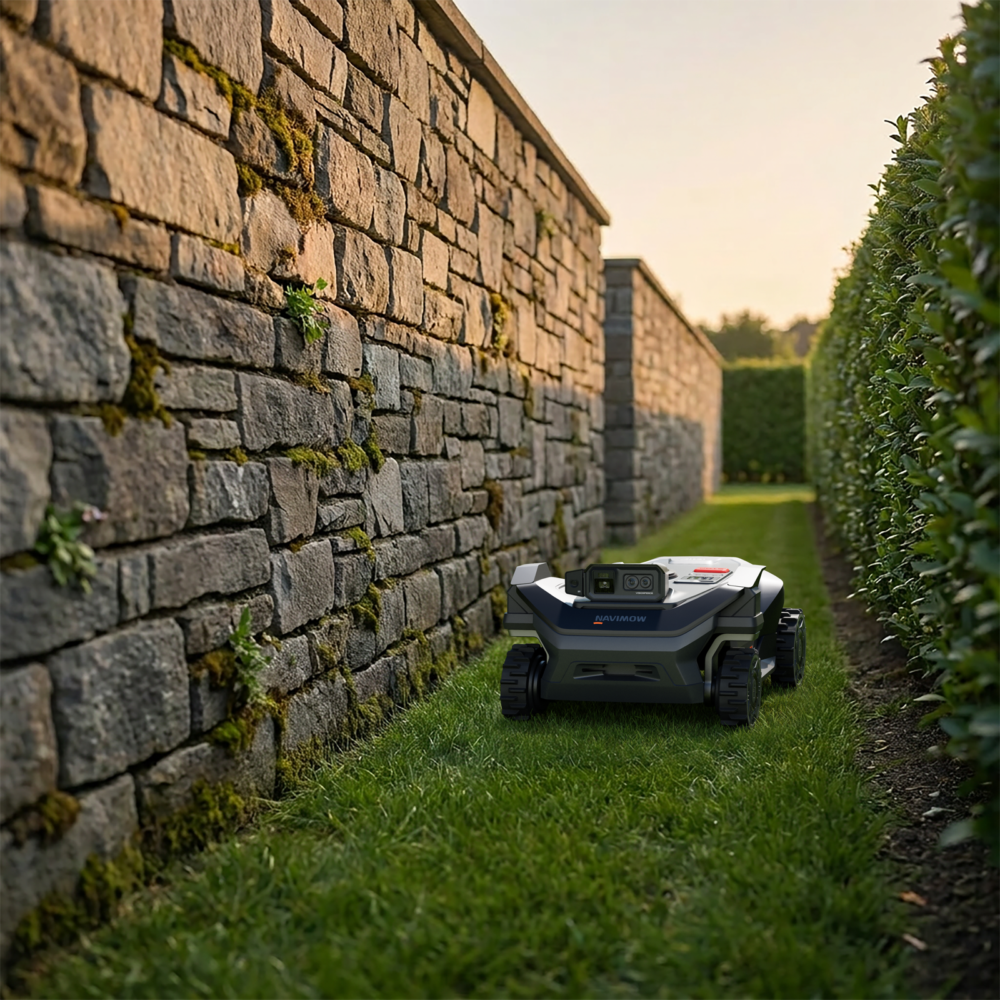
D-Log M 色彩还原：支持还原 D-Log M 灰片色彩，便于进行更多风格化调整，无需电脑，方便快捷。
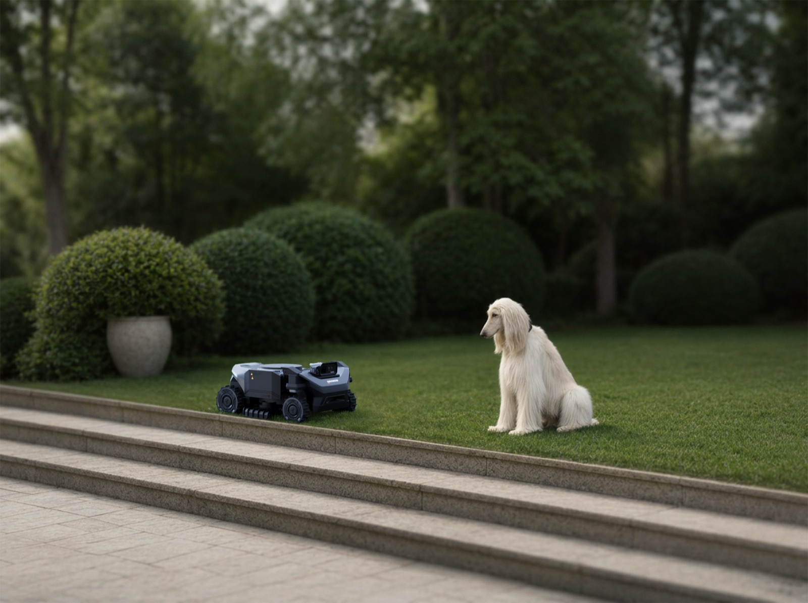
* 以上配件均需单独购买。
再看一下？在这看个够
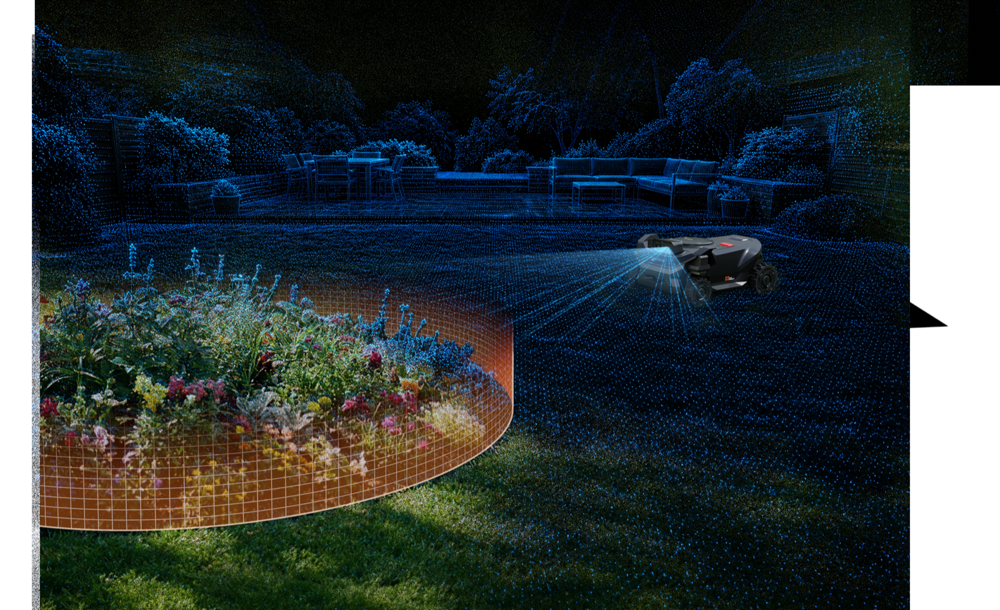
↔ 拖拽图片全方位查看全方位，好好看
各个角度，好好看
建议使用手机自带相机，扫描二维码获取更多精彩。